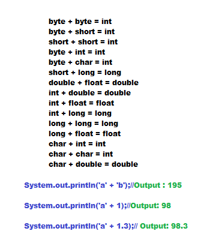
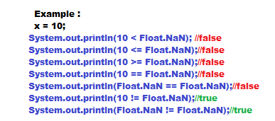

Arithmetic Operators
- If we apply any arithmetic operation between two variables x and y, the result type is always max(int, type of x, type of y)

- In integral arithmetic(byte, int, short, long) there is no way to represent infinity, if infinity is the result then we will get ArithmeticException / by zero System.out.println(10/0);// Runtime Exception: ArithmeticException / by zero,But in floating point arithmetic (float,double) there is way to represent infinity. System.out.println(10/0.0)//infinity .
- For the Float and Double class contains the following constants: POSITIVE_INFINITY
NEGATIVE_INFINITY
- System.out.println(10/0.0)//output : infinity
System.out.println(10/-0.0)//output : -infinity
- NaN(Not a Number) in integral arithmetic(byte, short,int, long) there is no way to define undefined result . So if we got any undefined result then we will get ArithemticException
- System.out.println(0/0)//output: ArithmeticException
- But in Float and Double class there is a way to represent undefined result, here we will not get ArithemticException
- System.out.println(0.0/0.0);//Output: NaN
System.out.println(-0.0/0.0);//Output:NaN
- For any x value including NaN, the following expression return false.

- ArithmeticException:
1. It is a Runtime Exception but not compile time error .
2. It occurs only in integral arithmetic but not in floating point arithmetic .
3. The only operations which cause ArithmeticException are '/' and '%' .